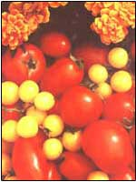
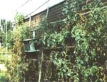

SPRING GARDEN
Build and plant the bed that will provide shade, juicy tomatoes, and a little extra
income.
Tam an organic farmer who subscribes to the utilitarian in building design-especially when it comes to gardening. The simple, inexpensive project below not only provides food and income, but also the comfort and energy savings from the vast shading it offers. Believe me, living in a small home with little insulation on a somewhat spartan income has been a most powerful motivation. My only regret is not building this ecosystem 10 years ago, when this old house had no air conditioning. The whole project will cost you $75, and by selling your delicious home-growns, you'll more than make up for the cost.
Building the Frame
Materials:
-roll of plastic
-50' x 5' roll of 2" x 4" wire fencing
-small roll of bailing wire
-12 large washers and screws
Tools:
-wire cutters
-screwdriver (cordless drill)
Construction Method
Start by spreading out a cheap roll of plastic around the base of your house for protection (it will be in direct contact with the tomato bed). By placing plastic between the ground and the bed, you will also keep the tomato roots from reaching non-organic residues such as lead-based paints. You may want to attach the house-side fencing edge to furring strips that are securely fastened to your house frame. Make sure that your gutter system is in good working order; the rain run off from your roof may be too much for your plants. This could cause tomato-cracking and soil nutrient wash-out. A couple of 55-gallon drums strategically placed to catch this run-off will ensure an ample supply of relatively pure water for your tomatoes. (If any of you have roofs that are coated with lead, consider the possibilities of toxins running off with rain water.) Each plant requires approximately two gallons weekly.
Next, choose a wall facing south, or even better-west. Contrary to popular opinion, tomatoes do better with some shade; they live longer and the fruit is tastier. Clear an area several yards away, along the length of this wall. Unroll the fencing along the length of it, placing a few bricks as you roll to keep the wire from recoiling. Next, pull up the fencing's edge (nearest your house) and attach it to the wall at a 24" height using screws, large washers, and your screwdriver. Space screws every four to five feet along the entire length of the wall. Then pull up the outside edge, securing the opposing edges together with baling wire and leaving a 12"-wide opening. Of course, you may vary these dimensions according to your needs and the particular layout of your home.
The basket-type bed you've just created will conform dimensionally to the weight of the growing medium, becoming wider and more cylindrical at the base. The ends of the bed are enclosed by cutting off the last vertical strand of the outer edge and then bending and securing the edges together with the exposed horizontal strands. Remember, the ground is to support the weight of the soil medium, not the house fastening points!
Filling the Basket (with organic growing medium)
Materials:
-6 to 10 bales of wheat straw (note: wood chips, hay, or plastic may be used for the basket liner). The straw may be more
expensive, but the others do not keep pests away or allow air circulation of the roots and/or water drainage that is essential
for intensive gardening.
-50 to 100 cubic feet of partially composted cow manure (equivalent to about two to four pickup-truck loads). I bought my two
loads at a local dairy farm for $10 each. This price even included loading with a front-end loader.
-10 to 20 cubic feet of coarse sand (I purchased my load at a local quarry for $10).
-5 to 10 pounds of bone-meal (provides the needed phosporus that cow manure lacks).
-1 to 2 gallons of hard-wood ashes (provides potash).
Be sure to mix these ingredients well. The soil-medium recipe is about as organic as you're going to get for a reasonable
price. My soil mixture resulted in a pH of 6.3, which is near perfect for tomatoes (or just about any vegetable, for that matter).
Of course, this recipe can be tailored to your particular circumstances. A mixture of sand, topsoil, and compost should work
well.
Birdnesting
Using the straw, line the basket, starting at the basket's floor, and interweave handfuls as you go, much as a lazy bird would do. Build up the sides to a height of 5" or 6", with a fluffy 3" to 4" inches in thickness, and fill to height with the soil-medium. (Hopefully, you're able to drive a pick-up alongside the bed, so you can shovel directly into the back.) Repeat this process till you reach the desired depth. (Mine is only 12" deep). Remember: you can add more next year. Then cover the bed's surface with three to four inches of straw.
The bed is now ready for your hardened tomato transplants. If you're waiting for warmer weather to plant, you may want to cover the bed with plastic in order to prevent any rain run off of the soil's nutrients. This will also greatly reduce the offensive odor that manure inherits for several days.
There's not much else that compares with actually creating what was once an idea. So have fun building, and change the blueprints to suit your own imagination.
I planted 50 6" tomato plants in April of 1992 in this manure-sand mixture. The manure was only a few days old and didn't burn the plants at all. In fact, they thrived, providing hundreds of pounds of healthy tomatoes-much more than my family could consume. Use them fresh, in sauces, or canned for the winter. Plus, I more than made up for the initial money invested ($75) with my sales to restaurants, grocery stores, and local neighbors.
My tomato foliage reached heights of more than 10', covering the west side of our trailer and dramatically lowered the temperature inside. We had no problem with insects-inside or outside- except for my mate's fear of spiders, which benevolently stayed outside trapping harmful garden pests. A couple of dozen applications of cow manure (a shovelful every couple of weeks per plants) seemed to keep the pests away and helped feed the thriving tomatoes-not to mention built up the bed to the proper depth.
I made the trellis out of bamboo poles fastened together with baling wire woven through V holes drilled through the bamboo. Biodegradable jute string was perfect for tying the ever-growing vines. I wish now that I had strung another roll of fencing to the 4 x 4s cemented in the ground every 8' or so for a maintenance-free trellis; the jute string was fairly expensive and the labor of stringing was a bit time-consuming. I believe the fence trellis would provide much better support after several years went by, and would be cheaper than using the string as well.
Be sure to plant disease-resistant indeterminate varieties according to your preference. My plants were spaced 12" apart and did fine. No pruning was done until the end of August. (Pruning doesn't increase the total yield.) In fact, pruning encourages tomato-splitting from excessive water (the extra foilage absorbs extra water) and provides less shade. This fall I will add an extra 8" to 10" of birdnesting and soil-medium. Next year's crop should be even more bountiful.
Editor's Note: Timothy Clapsaddle is an organic farmer who is interested in making self-sufficient systems affordable and user-friendly to people and the environment. Resources
What are you going to do with all those extra tomatoes? Try making some original recipes. Here's one book with a whole surplus of ideas:
Tomatoes! The editors of Garden Way Publishing offer 365 tomato recipes to get you through the year. (Storey Communications, Schoolhouse Road, Pownal, Vermont 05261; 800/827-8673). Available postpaid for $15.45.
|
 One of the joys of summer is picking a ripe tomato from the vine and eating it right there in the yard. |
 My tomato foliage heights of more than 10 feet, covering the entire west side of my home. |
|